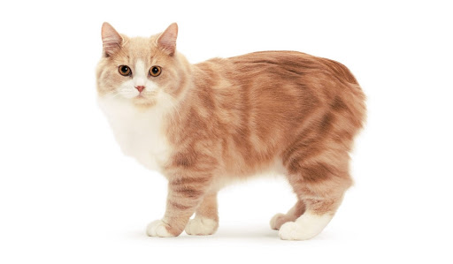
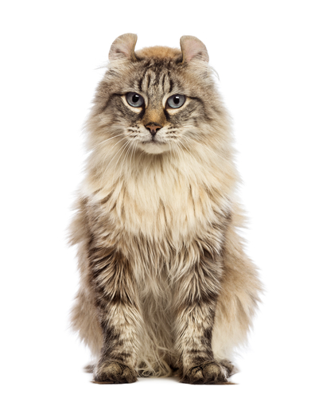

Каталог товаров
|  |
Мэнская кошка — порода кошек, возникшая на острове Мэн. Отличительной особенностью
мэнских кошек обычно считается отсутствие хвоста, хотя в действительности не все
представители этой породы бесхвосты.
Смотреть подробнее Цена: 20 000 р. |
|  |
Американский керл — это кошка средних размеров, пропорциональна, имеет шелковистую шерсть средней
длины с плотно прилегающими к телу волосками. Глаза могут быть разных цветов, но должны
соответствовать окрасу шерсти.
Смотреть подробнее Цена: 20 000 р. |